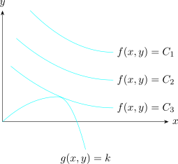
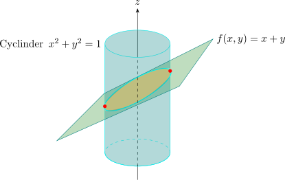
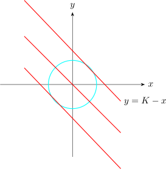
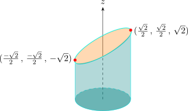
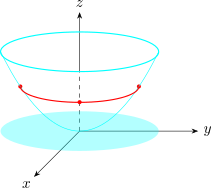

1.6 Extrema for Functions with Side Conditions (Constraints)
Lagrange Multipliers
Often a function is to be maximised or minimised not over a region but along a curve or surface: the largest volume for a given surface area, the hottest point on a wire. Consider the problem of finding the extreme values of \(f(x,y)\) subject to the constraint \(g(x,y) = k\). To maximise \(f\) is to find the largest value \(c\) for which the level curve \(f(x,y) = c\) still meets the curve \(g(x,y) = k\). At that value the two curves touch without crossing: they have a common tangent line at the point of contact.

Their normal lines at the point \((x_0,y_0)\) then coincide, and since gradients are normal to level curves, the gradient vectors are parallel: \[ \nabla f(x_0,y_0) = \lambda \nabla g(x_0,y_0)\] for some scalar \(\lambda \), called a Lagrange multiplier. The argument is made precise by the following theorem.
Theorem 1.6.1 (Lagrange). Let \(f\) and \(g\) have continuous first partial derivatives, and suppose that \(f\), restricted to the curve \(g(x,y) = k\), has a local maximum or minimum at \((x_0,y_0)\), where \(\nabla g(x_0,y_0)\neq \mathbf 0\). Then there is a number \(\lambda \) with \(\nabla f(x_0,y_0) = \lambda \nabla g(x_0,y_0)\). The same holds for \(f(x,y,z)\) restricted to a surface \(g(x,y,z) = k\).
Proof. Since \(\nabla g(x_0,y_0)\neq \mathbf 0\), the implicit function theorem (the subsection of that name) shows that near \((x_0,y_0)\) the curve \(g = k\) is the path of a differentiable curve \(\mathbf r(t)\) with \(\mathbf r(0) = (x_0,y_0)\) and \(\mathbf r'(0)\neq \mathbf 0\). The function \(t\mapsto f(\mathbf r(t))\) has a local extremum at \(t = 0\), so its derivative \(\nabla f\cdot \mathbf r'(0)\) is zero there. Also \(g(\mathbf r(t)) = k\) for all \(t\), so \(\nabla g\cdot \mathbf r'(0) = 0\). In the plane, both \(\nabla f\) and \(\nabla g\) are therefore perpendicular to the same non-zero vector \(\mathbf r'(0)\), hence parallel, and since \(\nabla g\neq \mathbf 0\), \(\nabla f = \lambda \nabla g\). On a surface the same reasoning applies to every curve through \((x_0,y_0,z_0)\) in the surface, so \(\nabla f\) is perpendicular to the whole tangent plane, as \(\nabla g\) is. □
Method of Lagrange Multipliers
To find the maximum and minimum values of \(f(x,y,z)\) subject to the constraint \(g(x,y,z) = k\), assuming that these extreme values exist and that \(\nabla g \neq \mathbf 0\) on the surface \(g(x,y,z) = k\):
- 1.
- Find all values of \(x\), \(y\), \(z\) and \(\lambda \) such that \[\nabla f(x,y,z) = \lambda \nabla g(x,y,z)\qquad \text {and}\qquad g(x,y,z) = k .\]
- 2.
- Evaluate \(f\) at all the points \((x,y,z)\) found in step 1. The largest of these values is the maximum of \(f\), and the smallest is the minimum.
In components, step 1 is a system of four equations, \(f_x = \lambda g_x\), \(f_y = \lambda g_y\), \(f_z = \lambda g_z\) and \(g = k\), in four unknowns. For a function of two variables there are three equations in \(x\), \(y\) and \(\lambda \).
Example 1.6.2. Find the extreme values of \(f(x,y) = x + y\) subject to the constraint \(x^2 + y^2 = 1\).

Geometrically, the graph of \(f\) is the plane \(z = x + y\) and the constraint is the cylinder \(x^2 + y^2 = 1\); the problem asks for the highest and lowest points of the ellipse in which they meet. In the plane, the level curves \(x + y = k\) are parallel lines, and the extreme values of \(k\) are those for which the line just touches the unit circle.

With \(g(x,y) = x^2 + y^2\), \(\nabla f = \langle 1, 1\rangle \) and \(\nabla g = \langle 2x, 2y\rangle \), so the equations are \[1 = 2\lambda x,\qquad 1 = 2\lambda y,\qquad x^2 + y^2 = 1 .\] The first two show \(\lambda \neq 0\) and \(x = y = \frac {1}{2\lambda }\). Then \(2x^2 = 1\), so \(x = y = \pm \frac {\sqrt {2}}{2}\), giving the candidates \(\left (\frac {\sqrt {2}}{2}, \frac {\sqrt {2}}{2}\right )\) and \(\left (-\frac {\sqrt {2}}{2}, -\frac {\sqrt {2}}{2}\right )\). There \[f\left (\frac {\sqrt {2}}{2}, \frac {\sqrt {2}}{2}\right )=\sqrt {2}\ \ \text {(the maximum)},\qquad f\left (-\frac {\sqrt {2}}{2}, -\frac {\sqrt {2}}{2}\right )=-\sqrt {2} \ \ \text {(the minimum)}.\]

Example 1.6.3. Find the extreme values of the function \(f(x,y) = x^2 + 2y^2\) on the circle \(x^2 + y^2 = 1\).
With \(g(x,y) = x^2 + y^2\), the equations \(\nabla f = \lambda \nabla g\) and the constraint read \[2x = 2\lambda x,\qquad 4y = 2\lambda y,\qquad x^2 + y^2 = 1 .\] The first gives \(x = 0\) or \(\lambda = 1\).
- \(-\)
- If \(x = 0\), the constraint gives \(y = \pm 1\).
- \(-\)
- If \(\lambda = 1\), the second equation becomes \(4y = 2y\), so \(y = 0\), and the constraint gives \(x = \pm 1\).
The candidates are \((0,\pm 1)\) and \((\pm 1,0)\), where \[f(0,\pm 1) = 2,\qquad f(\pm 1,0) = 1 .\] So the maximum of \(f\) on the circle is \(2\), at \((0,\pm 1)\), and the minimum is \(1\), at \((\pm 1, 0)\). Geometrically, the circle lies on the paraboloid \(z = x^2 + 2y^2\) along a closed curve whose highest points lie over the \(y\)-axis and lowest over the \(x\)-axis.

Two Constraints
To find the extreme values of \(f(x,y,z)\) subject to two constraints \[g(x,y,z) = k,\qquad h(x,y,z) = c ,\] whose intersection is a curve, the same reasoning shows that at an extreme point \(\nabla f\) lies in the plane spanned by \(\nabla g\) and \(\nabla h\) (provided these are not parallel): \[\nabla f =\lambda \nabla g + \mu \nabla h .\] In components this gives five equations in the five unknowns \(x\), \(y\), \(z\), \(\lambda \) and \(\mu \): \[f_x = \lambda g_x + \mu h_x,\quad f_y = \lambda g_y + \mu h_y,\quad f_z = \lambda g_z + \mu h_z,\quad g = k,\quad h = c .\]
Example 1.6.4. Find the maximum value of the function \(f(x,y,z) = x + 2y + 3z\) on the curve of intersection of the plane \(x - y + z =1\) and the cylinder \(x^2 + y^2 = 1\).
Solution. With \(g = x - y + z\) and \(h = x^2 + y^2\), \[\nabla f = \langle 1, 2, 3\rangle ,\qquad \nabla g = \langle 1, -1, 1\rangle ,\qquad \nabla h = \langle 2x, 2y, 0\rangle ,\] so the equations are \begin {align} 1 & = \lambda + 2\mu x, \label {eq:tc1}\\ 2 & = -\lambda + 2\mu y, \label {eq:tc2}\\ 3 & = \lambda , \label {eq:tc3}\\ x - y + z & = 1, \label {eq:tc4}\\ x^2 + y^2 & = 1 . \label {eq:tc5} \end {align}
By (??), \(\lambda = 3\), and then (??) and (??) give \[2\mu x = -2,\qquad 2\mu y = 5,\qquad \text {so}\qquad x = -\frac {1}{\mu },\quad y = \frac {5}{2\mu }.\] Substituting into (??), \[\frac {1}{\mu ^2}+ \frac {25}{4\mu ^2} = 1 ,\qquad \mu ^2 = \frac {29}{4},\qquad \mu = \pm \frac {\sqrt {29}}{2},\] so \(x = \mp \frac {2}{\sqrt {29}}\) and \(y = \pm \frac {5}{\sqrt {29}}\), with the signs taken together. From (??), \(z = 1 - x + y = 1 \pm \frac {7}{\sqrt {29}}\). The two candidates are \[\left (-\frac {2}{\sqrt {29}}, \frac {5}{\sqrt {29}}, 1 + \frac {7}{\sqrt {29}}\right ) \quad \text {and}\quad \left (\frac {2}{\sqrt {29}}, -\frac {5}{\sqrt {29}}, 1 - \frac {7}{\sqrt {29}}\right ),\] where \[f = 3 \pm \frac {-2 + 10 + 21}{\sqrt {29}} = 3 \pm \frac {29}{\sqrt {29}} = 3\pm \sqrt {29} .\] The maximum value is \(3 + \sqrt {29}\approx 8.39\), and the minimum is \(3 - \sqrt {29}\).
Example 1.6.5. A closed rectangular box is to have volume \(32\ \text {m}^3\). The base costs twice as much per square metre as the top and sides. Find the dimensions that minimise the cost.
Solution. Let the base be \(x\) by \(y\) and the height \(z\), and measure cost in units of the price of the top and sides per square metre. The cost is \(C = 2xy + xy + 2xz + 2yz = 3xy + 2xz + 2yz\), to be minimised subject to \(xyz = 32\). The Lagrange equations are \[3y + 2z = \lambda yz,\qquad 3x + 2z = \lambda xz,\qquad 2x + 2y = \lambda xy .\] Multiplying the first by \(x\) and the second by \(y\) and subtracting gives \(2z(x - y) = 0\), so \(x = y\). Multiplying the second by \(y\) and the third by \(z\) and subtracting gives \(3xy - 2yz = 0\) (using \(x = y\)), so \(z = \frac 32 x\). Then \(xyz = \frac 32 x^3 = 32\), so \(x^3 = \frac {64}{3}\) and \[x = y = \frac {4}{\sqrt [3]{3}}\approx 2.77\ \text {m},\qquad z = \frac 32 x\approx 4.16\ \text {m}.\] The more expensive base makes the box taller than a cube.
Example 1.6.6. Find the maximum of \(f(x,y,z) = xyz\) for positive \(x\), \(y\), \(z\) with \(x + y + z = 12\), and deduce the inequality of arithmetic and geometric means for three numbers.
Solution. The equations \(yz = \lambda \), \(xz = \lambda \), \(xy = \lambda \) give \(yz = xz = xy\), and since the variables are positive, \(x = y = z\). The constraint then gives \(x = y = z = 4\) and the maximum \(f = 64\). (The maximum exists because \(f\) is continuous on the closed bounded triangle \(x,y,z\geq 0\), \(x+y+z = 12\) and vanishes on its edges.) Replacing \(12\) by any sum \(s\) gives the maximum \(\left (\frac {s}{3}\right )^3\), so for positive numbers with sum \(s\), \[xyz\leq \left (\frac {x+y+z}{3}\right )^3,\qquad \text {that is}\qquad \sqrt [3]{xyz} \leq \frac {x+y+z}{3},\] with equality only when \(x = y = z\).
Questions on this section
Stuck on something here? Ask below and it stays attached to this topic.